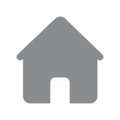

高血压病的危险因素有哪些
作者: | 发布时间: 2019-02-12 | 163 次浏览
1.高钠盐饮食 盐与高血压有关的主要证据，来自人群间的比较研究。限制高血压病人摄钠（食盐与含钠食品）则血压下降，服用利尿剂、排钠利水，血压也下降。在某些钠摄入量很低的人群，根本不知道高血压病例，而像日本人均钠摄入量约为美国人的2~4倍，人群中几乎三分之一患有高血压。据我们调查黑龙江居民平均摄盐量17~17g/d，明显高于生理需要量和全国平均水平，高血压发病率高于全国平均发病率。
2.紧张刺激 紧张刺激是内外紧张刺激因子引起的有明显的主观紧迫感、相应的紧张行为表现和相伴随的生理、心理变化等一系列活动过程。紧张刺激有明显提高脑干网状上行激活系统兴奋性的作用，引起一系列血中儿茶酚胺类激素升高，血压上升，心跳加快，头部和肌肉血液供应增加，内脏血液供应减少，此期若过于强烈持久或反复发作，可导致心血管系统的功能和器质性损害。
3.超重与肥胖 体重增加所导致超重与肥胖是高血压、冠心病和缺血性脑卒中发病的一个首要的独立危险因素。
4.饮酒 欧美等国的近30个研究中均已发现，饮酒过量（每日酒精摄入量大于或等于35g）可使高血压患病率增高，控制引酒后，血压水平明显下降。
5.吸烟 吸烟可在短期内使血压急剧升高，研究表明高血压患者戒烟后可大大降低并发心血管疾病的危险。
6.缺少锻炼 有规律的体育活动不仅限于降低心脏的风险，经常锻炼可缓解精神紧张，增强体质和提高心脏功能。
7.遗传因素 近年来很多研究表明，高血压是多种遗传性疾病，这种病的发生几率受遗传因素的影响，又与环境因素有关。